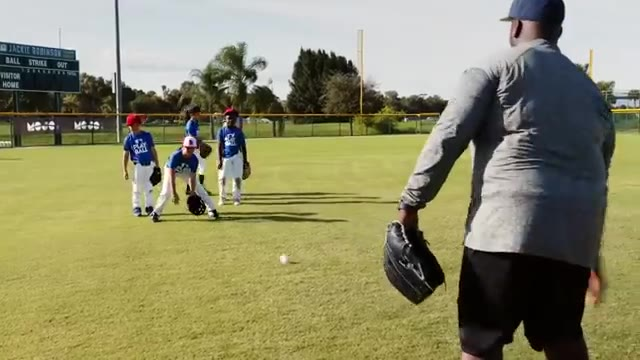
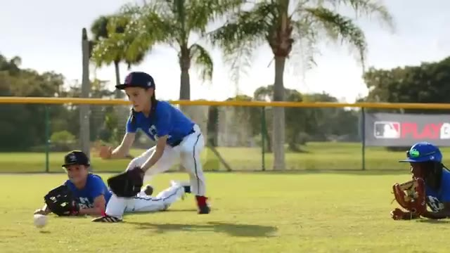
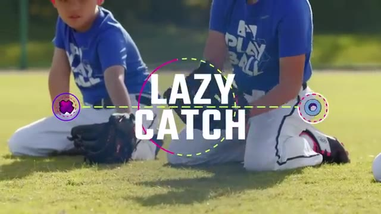
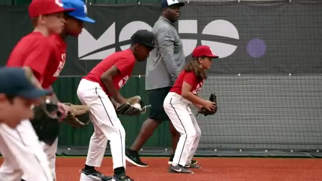
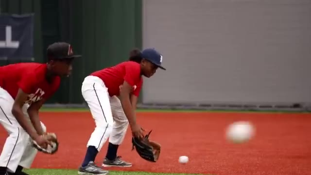
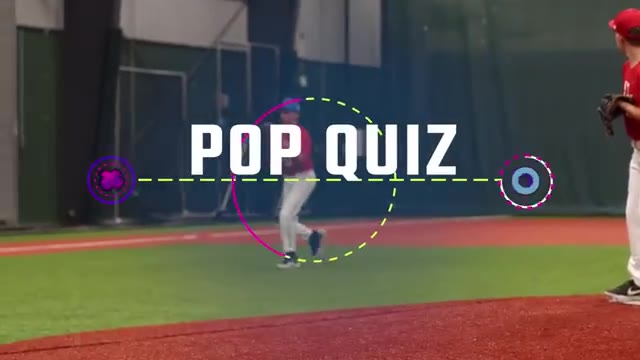
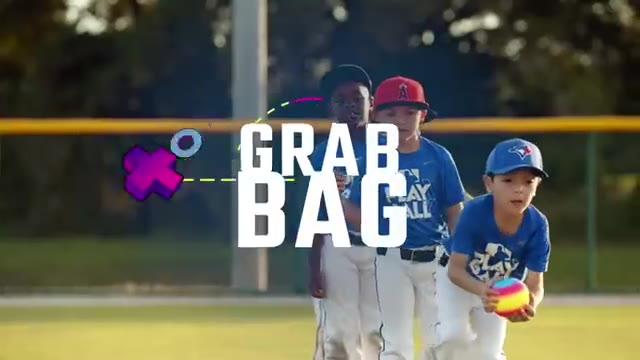
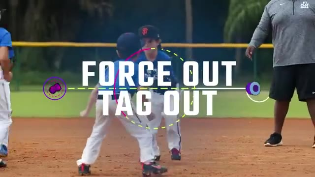
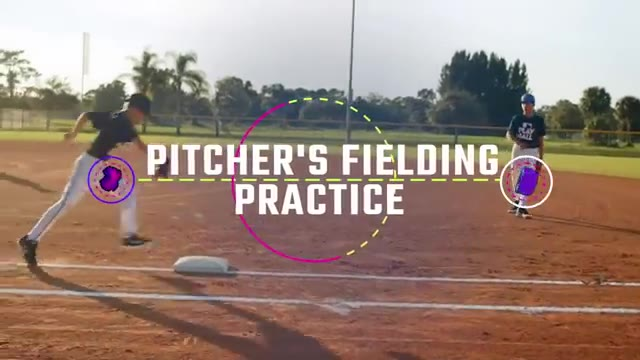

10 Best Baseball Fielding Drills for Kids | Fun Youth Baseball Drills From the MOJO App
Auto-generated from the video. Tap a row to jump · tap "Watch" on any drill to open YouTube at the exact moment.
#01 Alligator Traps
▶ Watch on YouTube · 0:11

kids will love gobbling up grounders in this game we call alligator traps line up your team and stand 10 feet away the first player in line gets into a set stance with knees bent and hips low whether you're playing softball or baseball the game is the same here's how it looks rol…
#02 Belly Up
▶ Watch on YouTube · 1:15

players improve their reaction time in this game we call belly up line up your team and tell everyone to lie down on their bellies you stand about 20 feet away with a ball whether you're playing with softballs or baseballs the game is the same here's how it looks roll the ball to…
#03 Lazy Catch
▶ Watch on YouTube · 2:21

grounders in this game we call lazy catch divide your team into groups of five you grab a ball and stand 15 feet away from the first player in line whether you're playing softball or baseball this game is the same here's how it looks all five players get down on both knees withou…
#04 Short Hop Showdown
▶ Watch on YouTube · 3:38

dig the ball out of the dirt in this game we call short hop showdown divide players into pairs spaced about 10 feet apart and give each pair a ball everyone starts on their knees whether you're playing softball or baseball the game is the same here's how it looks on your call the…
#05 Ground Ball Shuffle
▶ Watch on YouTube · 4:41

infielders stay on their toes in this game we call ground ball shuffle all right i need half the guys on this side another half on this side partner divide your team into pairs standing about 15 feet apart every pair gets a ball whether you're playing with softballs or baseballs …
#06 Pop Quiz
▶ Watch on YouTube · 5:46

each position in this game we call pop quiz your team takes the field with players at each position you stand in front of home with a bucket of balls whether you're playing softball or baseball the game is the same set a target number of consecutive pop-ups for the team to catch …
#07 Grab Bag
▶ Watch on YouTube · 6:56

grounders and pop-ups in this game we call grab bag place two cones 10 feet apart in the outfield then divide the team in half and line up each group behind a cone you stand about 15 feet in front of and between the two cones with a bucket of practice balls if you have help you c…
#08 Force Out Tag Out
▶ Watch on YouTube · 9:30

bases in this game we call force out tag out divide the group into pairs of one runner and one fielder with a glove and a ball spread the pairs out across the base pads standing about 10 feet apart whether you're playing with softballs or baseballs this game looks exactly the sam…
#09 Pitcher'S Fielding Practice
▶ Watch on YouTube · 10:44

the field this is pitcher's fielding practice line up your pitchers by the mound and set up at home with a bucket of balls and a fungo bat to start send one fielder to play first base all right here we go the pitcher simulates a wind-up in pitch finishing in proper fielding posit…